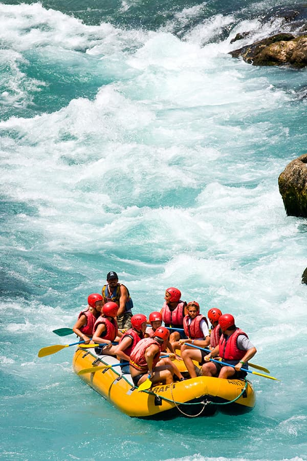

Tudo começou com uma paixão em comum: a aventura e o desejo de
explorar a natureza de
uma maneira
diferente. A Rafting Adventure nasceu da ideia de transformar a emoção das
corredeiras em
experiências
inesquecíveis. Inspirados pela beleza dos rios e pela energia dos esportes de
aventura, um grupo de
apaixonados pela natureza decidiu criar uma empresa que permitisse a outras
pessoas
descobrir a
sensação única de descer um rio, enfrentar desafios e trabalhar em equipe.

O que começou como um sonho se transformou em um projeto dedicado
a proporcionar
momentos de
adrenalina, diversão e conexão com a natureza. Nossa proposta vai muito além de
oferecer passeios de rafting.
Queremos que cada
participante tenha
a oportunidade de superar seus próprios limites, fortalecer amizades,
desenvolver o
espírito de
equipe e descobrir que as melhores experiências muitas vezes começam fora da
zona de
conforto. Com foco na segurança, na qualidade do atendimento e no respeito
ao meio ambiente, a
Rafting
Adventure busca tornar cada descida uma experiência especial, seja para quem
está
vivendo sua
primeira aventura ou para quem já conhece a emoção das águas.